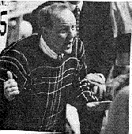
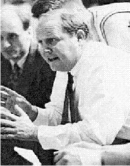

After three years at the helm of the Viking basketball program, Coach Clyde Nelson has posted an outstanding winning percentage. His overall record stands at 61-33 and his Scenic West Athletic Conference mark is 32-22.
Last season the Vikings broke even with a 16-16 overall record and David Isaacson was voted to the All-Region 18 second team.
Nelson led his 1995 Vikings to a second-place SWAC finish and for his effort was voted by his fellow coaches as the SWAC Coaches Coach of the Year. His 1994 Vikes posted an impressive 24-8 overall mark and finished second at the Region 18 Tournament in St. George UT.
Prior to coming to Ricks, Coach Nelson enjoyed an extemely successful prep coaching career at Viewmont High School in Bountiful, Utah. In his last two seasons at Viewmont, Nelson posted a 47-1 record and went 24-0 in 1993, winning the Utah State 4-A Championship. His 1992-93 team was the first Utah high school team to be ranked nationally when the "USA Today" Newspaper listed them 22nd in the nation. Nelson, who was selected as the 4-A Coach of the Year in 1991, 1992, and 1993, won four regional championships over his eight-year stint at Viewmont.
Previous to his appointment at Viewmont, Clyde coached for three seasons at Skyview High School in Smithfield, Utah.
In April of 1994, Nelson took an all-state team from Utah to the national Basketball Congress International tournament in Phoenix, Arizona, and coached them to a 9-0 record and a BCI national championship.
Coach Nelson was starting point guard for the Vikings during the 1972-73 and 1975-76 campaigns and was also a baseball standout for Ricks. He earned all - conference and all-region honors and was ranked fifth nationally with a .486 batting average. He was drafted out of high school by the San Diego Padres but instead elected to play basketball and baseball for Ricks.

He is a graduate of Ricks and Brigham Young University and served an LDS mission to Melbourne, Australia. Clyde was born in Cody, Wyoming, but was raised in Bountiful. He and his wife Jan have five children.